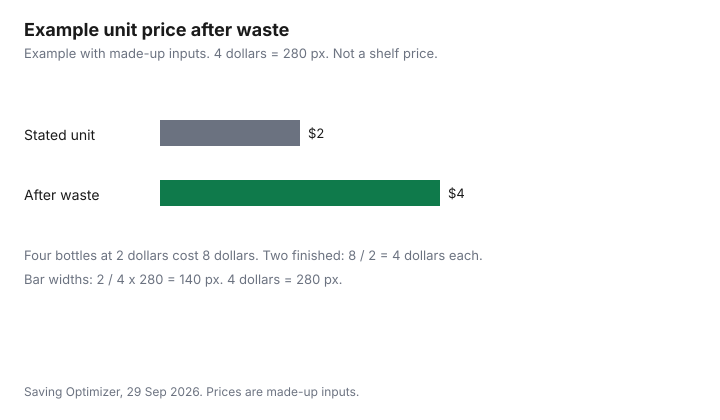

Personal Care · Canada
Costco Personal Care in Canada: What's Worth Buying in Bulk and What Isn't
A warehouse price is a unit price only for the bottles you finish. The rest is cash sitting in a cupboard until a date on the package, or until you stop using that product. This page is that check for personal care at Costco in Canada. The dollar figures in the worked example are made up. The return wording and the department names are from Costco pages checked 29 Sep 2026. Vitamins and the pharmacy counter are out of scope. No product is ranked.
Key takeaways
- Costco.ca, checked 29 Sep 2026, links Kirkland Signature at its own brand page. The Personal Care navigation that day included bath and body, feminine hygiene, incontinence, oral care, shaving and hair removal, and sunscreen.
- Example with made-up inputs: four bottles at 2 dollars each cost 8 dollars. If two go unused, the two you finish cost 4 dollars each. That is not a shelf price.
- This guide states no sunscreen expiry interval and no SPF rule. Read the date on the package you are holding.
- The member disclaimer guarantees satisfaction and a refund of the purchase price, with listed exceptions. Personal care is not named in those exceptions. An opened bottle is not promised here, because restrictions can be shown at the register.
- Vitamins are excluded. Dispensing fees stay on the Healthcare guide.
Kirkland Signature personal care range
Costco’s own brand is Kirkland Signature. On 29 Sep 2026 the Canada homepage linked that name to the Kirkland Signature page.
This guide does not cite a list of Kirkland toiletry items, so it names none, and it does not say a Kirkland product is made by any national brand. A similar bottle is not evidence of a shared formula. Compare the active ingredient and the DIN or the NPN the way the pharmacy store-brand guide does, then compare the size you will finish.
The same homepage grouped Personal Care with these headings: Bath and Body Care, Feminine Hygiene, Incontinence Products, Oral Care, Shaving and Hair Removal, and Sunscreen. Those are aisles, not recommendations. Vitamins sat under a vitamins heading beside Health and Beauty, and they are excluded from the table below. A prescription or a dispensing fee is the Costco pharmacy guide, not a front-of-warehouse toiletry.
Bulk value: unit price vs how fast you use it
Divide the price by the count of bottles or tubes. That is the stated unit price.
Then divide the same price by the count you will actually use before you stop or before the package date. That is the effective unit price. Example with made-up inputs. Four bottles at 2 dollars each cost 8 dollars, so the stated unit price is 2 dollars. Two of the four expire unused. The two you finish cost 4 dollars each. The banner still says 2 dollars. Your cupboard says 4.
Change the cells. Do not treat 2 dollars as a Costco tag. A discounted gift card, if you use one, belongs in the price you paid, not in a second invented percent. The gift-card guide is the stacking method. Membership itself is the membership guide. Paper, detergent, and other household bulk buys are the household Costco guide. A discounter comparison for those household goods is Dollarama, Walmart, and Costco.
Shelf life and storage (sunscreen, toothpaste)
This guide states no expiry month, no period-after-opening month, and no SPF rule. Sunscreen in the table is a season question: will you finish the tube before the date printed on it, and before the season you bought it for ends.
Toothpaste is the same kind of question with a different mark. If the tube shows a date or an opened-jar symbol, that mark wins over a unit price. This guide does not cite a storage-temperature rule, so it states none. Keep the product as that package says.
A lower unit price on a tube you will not finish is the same caution as on the pharmacy store-brand page. Fluoride and a sunscreen active are label comparisons, not efficacy claims here. Write the day you open the bottle on the bottle. A date you cannot read in the cupboard is a date you will miss.
Costco.ca vs warehouse
The member disclaimer checked 29 Sep 2026 says no sales will be made unless the person has a valid membership card. It also says reward coupons may not be used toward purchases that are not recorded on a warehouse front-end register.
The examples on that sentence include pharmacies and online purchases at Costco.ca. A coupon that works at the warehouse register is not, on that wording, a coupon for the website. This guide does not cite a fee schedule for shipping or for warehouse pickup, so it states no fee.
Do not invent a gap. If the website and the warehouse show different sizes, they are different unit prices, and you still apply the use-rate check to the size you would actually take home. A membership card in someone else’s name is not a workaround this page describes. Guests do not have purchasing privileges on that same disclaimer.
Returns on personal care
On merchandise, the disclaimer says Costco guarantees your satisfaction on every product it sells and will refund the purchase price, with exceptions.
The exceptions named there include electronics (a 90-day window for televisions, major appliances, projectors, computers, cameras, drones, camcorders, digital music players, tablets, smart watches, phones, and other electronics Costco identifies), diamonds and their paperwork, cigarettes and alcohol where prohibited, tires and batteries that may carry a product-specific warranty, custom-installed goods, gold and silver bullion, e-certificates, and gift cards and tickets. Personal care is not in that list. The same page says Costco may later restrict returns on these and other products, and that restrictions will be shown at the point of purchase. This page does not promise that every opened bottle comes back.
Quebec members get an extra sentence: Costco does not guarantee replacement parts, repair services, or the information needed to maintain or repair goods, under section 39.2 of the Quebec Consumer Protection Act. Members are also required to purchase packages or products they or their guests open or damage. Read the register prompt before you open a sealed set in the aisle. The cross-store map is the return-policy guide. A satisfaction line is not a promise this site adds on top of Costco’s own exceptions.
Sharing bulk buys with family
A bulk buy you will not finish is a candidate to split, not a candidate to stretch past the date on the package. Split only when each person will use their share and you have agreed who paid.
Do it before anyone opens the wrap if the only comfortable exit is the return wording at the register. The bulk-buy guide is the freeze, split, and share method written for food. This page does not copy food-safety rules onto shampoo. The habit is the same: a share nobody uses is still waste.
Keep the receipt with the member who paid. A family split does not create a second membership, and the disclaimer says guests cannot buy. If you cannot agree the split in the parking lot, buy the size you will finish alone. The made-up example is the test: two unused bottles turned 2 dollars into 4 dollars. Handing those two bottles to someone who will finish them is the only way the stated unit price comes back.
| Category | What to compare | Use-rate question | Date question |
|---|---|---|---|
| Toothpaste | Count of tubes, not the banner | How many weeks one tube lasts in your house | The date or opened-jar mark on that tube |
| Mouthwash | Volume you will pour, not the jug size | How many weeks the jug lasts at your pour | The date on the jug, if it has one |
| Shampoo and conditioner | The pair, if you use both | Which bottle finishes first | The date on each bottle |
| Body wash | Pump size against how often you use it | Whether a second bottle will be opened before the first date | The date on the bottle you have not opened yet |
| Razors | Handles and refills as their own sum | The per-shave guide, not a warehouse ranking | Whether a spare cartridge will be used |
| Sunscreen | The tube you will finish this season | Whether leftover product waits a year | No expiry month is stated here; check the date on the bottle. |
| Row | Bottles bought | Stated price each | Amount paid | Bottles finished | Effective price each |
|---|---|---|---|---|---|
| Made-up example | 4 | 2 dollars | 8 dollars | 2 | 4 dollars |

Sources & date stamps
- Costco.ca member disclaimer, checked 29 Sep 2026. Satisfaction guarantee and refund of the purchase price, with the exceptions quoted above. Reward coupons excluded from online Costco.ca purchases and from pharmacies. Valid membership required. Quebec replacement-parts sentence under section 39.2. Guests have no purchasing privileges.
- Costco.ca homepage, checked 29 Sep 2026. Kirkland Signature link. Personal Care headings: Bath and Body Care, Feminine Hygiene, Incontinence Products, Oral Care, Shaving and Hair Removal, Sunscreen.
- No expiry interval and no SPF rule are stated.
- The four-bottle prices are made-up inputs.
Frequently asked questions
Are Costco toiletries cheaper?
A lower unit price is cheaper only for the units you finish before they expire or you stop using them. This guide does not cite a dated shelf price, so it does not say a warehouse toiletry beats a pharmacy. Example with made-up inputs: four bottles at 2 dollars each cost 8 dollars, and if two go unused the two you finish cost 4 dollars each. Compare that figure with the small size you would actually use up.
Do toiletries expire?
This page states no sunscreen expiry interval and no period-after-opening rule of its own. Read the date and any opened-jar mark printed on the package you are holding. A bulk buy you will not finish before that date is waste, not a saving. Write the open date on the bottle the day you start it.
Is Kirkland Signature the same as name brands?
This page does not say that it is. The Costco website lists Kirkland Signature as its own brand, and no contract manufacturer was named on the pages checked 29 Sep 2026. Compare the active ingredient, the DIN or the NPN, and the size you will finish, the same way the pharmacy store-brand guide does. A similar bottle is not a shared formula.
Can I return personal care products to Costco?
The member disclaimer checked 29 Sep 2026 guarantees your satisfaction and a refund of the purchase price, with listed exceptions. Personal care is not named among those exceptions. Electronics have a 90-day window, and gift cards are non-refundable. The same page says restrictions can be added later and shown at the point of purchase, so an opened bottle is not promised here.
Should I split bulk packs with family?
Split only when each person will finish their share before it expires and you have agreed who paid. The food bulk guide is the split method for groceries, and the same habit applies to shampoo or toothpaste you will not finish alone. A share that leaves you with an opened bottle you cannot take back is still your cost. Agree the split before you open it, and keep the receipt with the buyer.
Researched and drafted with AI assistance and fact-checked against official Canadian sources. How we create content.
Disclosure: Discounted retailer gift cards are an offer type. Saving Optimizer may earn a commission if a partner link is added later. No gift-card partnership is claimed with Costco. A discount on a card changes what you pay. It does not change how fast you use a bottle. Education only.